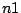
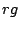

The famous mathematician Hardy relates the following episode with the (now also famous) Indian mathematician Ramanujan:
I remember once going to see him when he was ill at Putney. I had ridden in taxi cab number 1729 and remarked that the number seemed to me rather a dull one, and that I hoped it was not an unfavorable omen. "No," he replied, "it is a very interesting number; it is the smallest number expressible as the sum of two positive cubes in two different ways."
Your objective is to print cab numbers in a given range, [; +], specified by its lower limit, , and the size of the interval, . A number is a cab number if it can be expressed as the sum of two positive cubes, in at least two different ways.
1000 20000
1729 4104 13832 20683